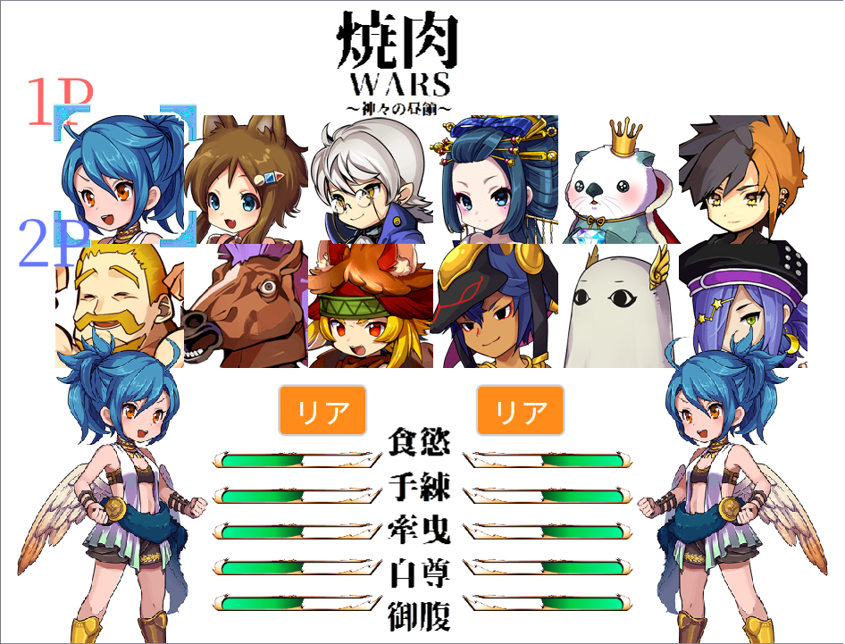
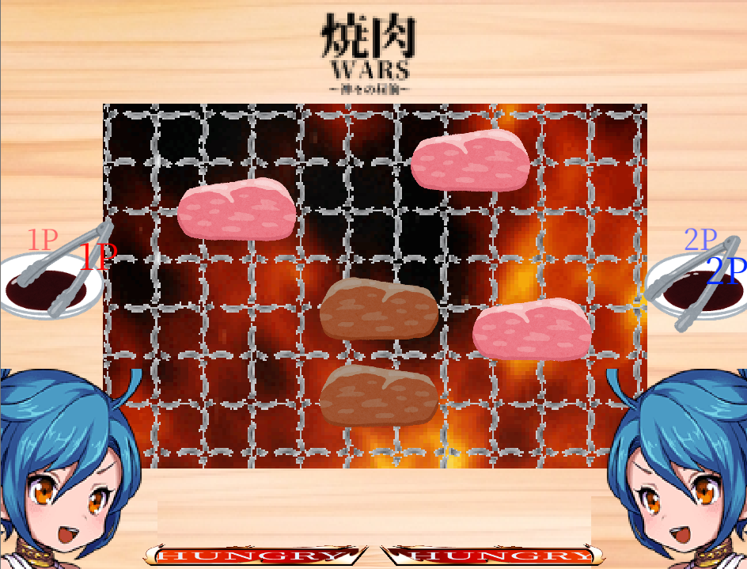

デバッガーとして開発協力。『焼肉WARS 神々の昼餉』

基本情報
- 制作時期
- 高校2年～3年
- 役割
- 個人制作に対する開発協力
- 使用ツール
- Scratch
- リンク
- 実際に遊ぶ
制作のきっかけ
高校2年のとき、同じ部活に所属していた友人が個人開発しているゲームのテストプレイを頼まれたことがきっかけです。
これは二人プレイ専用のゲームで、プレイには開発者のほかに協力者が必要でした。そこで私が抜擢されたのです。
こだわった点・工夫した点
- プレイヤーとして、全力でズルをする
- アップデートに合わせて、またもテストプレイ
「ゲームプレイヤーは、全力でズルをするものだ」という話は、誰からともなく聞くものです。
私もその言葉通り、勝つために手段を惜しまずプレイすることにしました。
そこで、生肉を連続で相手に押し付けると行動不能にできる不具合を発見。修正アップデートとして、肉を食べるのに一定のクールタイムが必要になる機能が追加され、生肉を相手に押し付け合うバトルはひとまず幕を閉じました。
高校3年生のとき、ゲームに大型アップデートとして「神威」という名のスキルが追加されました。
自機の移動速度を上げたり、焼き網の上にボムを配置したりとゲーム性が広がるものばかりで、さらに戦略性が求められるゲームに進化した感動をよく覚えています。
再びテストプレイに付き合うことになったのですが、特定の神威による硬直時間を悪用して生肉を押し付け続けることが再度できるようになったことに気付きました。
今度は片面でも生だと相手に押し付けられなくなり、生肉押し付けバトルは今度こそ幕を閉じることになりました。


振り返り・学び
この経験を通して、制作中のゲームを第三者に披露し、フィードバックを繰り返しもらう重要性に気付きました。
また、このゲームの開発者とは高校卒業までの間、かけがえのない友人関係を築けたと思っています。大学進学の折にLINEをブロックされて連絡がつかなくなりましたが、もしどこかで会えたら、その時には大学で学んだゲームAI製作の知識を活かしてCPU戦の開発協力をしたいと考えています。